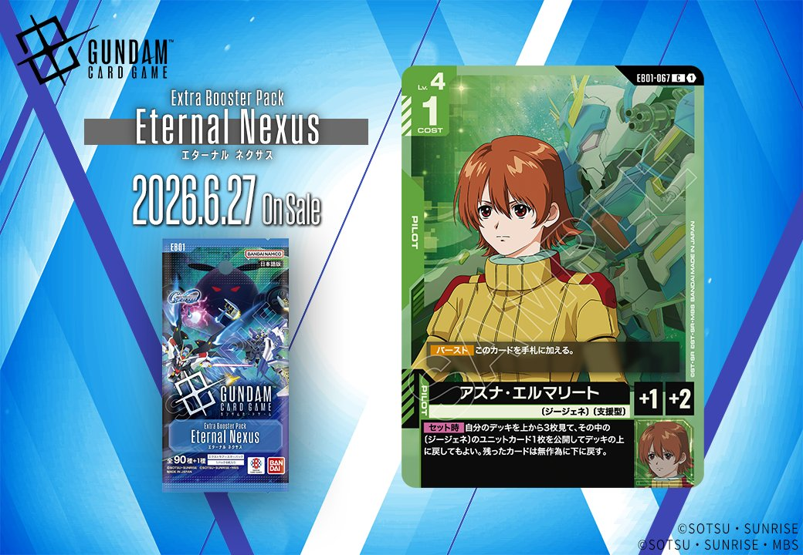
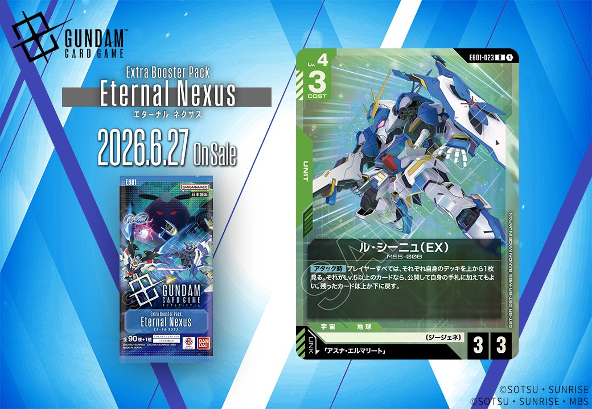

2026年6月27日発売のEB01「Eternal Nexus（エターナル ネクサス）」から、緑色のPILOT「アズナ・エルマリート」と緑色のUNIT「ル・シーニュ (EX)」、青色のCOMMAND「ガーベラ・ストレート」と青色のUNIT「ガンダムアストレイレッドフレーム改(EX)」の計4枚が収録されます。「ル・シーニュ (EX)」は「アスナ・エルマリート」とリンクし、「ガーベラ・ストレート」と「ガンダムアストレイレッドフレーム改(EX)」は共に「ロウ・ギュール」とのリンクが設定されています。

アズナ・エルマリート (EB01-067)
| 色 | 緑 | タイプ | PILOT |
| Lv | 4 | コスト | 1 |
| 補正 AP | 1 | 補正 HP | 2 |
| 特徴 | 〔ジージェネ〕、〔支援型〕 | ||
効果: 【バースト】このカードを手札に加える。【セット時】自分のデッキを上から3枚見て、その中の〔ジージェネ〕のユニットカード1枚を公開してデッキの上に戻してもよい。残ったカードは無作為に下に戻す。
アズナ・エルマリートは、緑色の〔ジージェネ〕デッキにおけるデッキトップ操作型の支援パイロットです。【セット時】効果でデッキ上から3枚を確認し、〔ジージェネ〕ユニット1枚をトップに戻せるため、次のドローの質を高められます。COST1でAP1/HP2という標準的なステータスながら、【バースト】で手札に加えられる点も含めて、〔ジージェネ〕デッキの安定性向上に貢献する1枚といえるでしょう。



ル・シーニュ (EX) (EB01-023)
| 色 | 緑 | タイプ | UNIT |
| Lv | 4 | コスト | 3 |
| AP | 3 | HP | 3 |
| 特徴 | 〔ジージェネ〕 | ||
| リンク条件 | 「アスナ・エルマリート」 | ||
効果: 【アタック時】プレイヤーすべては、それぞれ自身のデッキを上から1枚見る。それがLv.5以上のカードなら、公開して自身の手札に加えてもよい。残ったカードは上か下に戻す。
ル・シーニュ (EX)は【アタック時】に全プレイヤーがデッキトップを確認し、Lv.5以上なら手札に加えられる対称的な効果を持つLv.4ユニット。多人数戦では複数のプレイヤーが同時に恩恵を受ける可能性があり、高レベルカードを多く採用したデッキで価値が上がる。 コスト3でAP3/HP3の標準的なスタッツながら、デッキ構築次第では安定したハンドアドバンテージ源として機能し、同日公開のクィン・マンサやビルドストライクガンダム等の高レベル〔ジージェネ〕ユニットとの相性も良好。

ガーベラ・ストレート (EB01-076)
| 色 | 青 | タイプ | COMMAND |
| Lv | 4 | コスト | 1 |
| 特徴 | 〔ジージェネ〕 | ||
| リンク条件 | 「ロウ・ギュール」 | ||
効果: 【メイン/アクション】〔ジージェネ〕の味方のユニット1つを選ぶ。それを3回復する。
ガーベラ・ストレートは、コスト1でジージェネのユニットを3回復できる青のコマンドカード。「ロウ・ギュール」とのリンクを持つため、専用デッキでの運用が想定される。低コストで回復量が大きく、ジージェネユニットの継戦能力を高める実用的なサポートカードと言える。


ガンダムアストレイレッドフレーム改(EX) (EB01-001)
| 色 | 青 | タイプ | UNIT |
| Lv | 6 | コスト | 5 |
| AP | 5 | HP | 4 |
| 特徴 | 〔ジージェネ〕 | ||
| リンク条件 | 「ロウ・ギュール」 | ||
効果: 起動・メインターン1回 自分のトラッシュのコマンドカード2枚をゲームから除外する:ダメージを受けているLv.7以下の相手のユニット1つを選ぶ。それをレストにし、それは次の相手のターンのスタートフェイズでアクティブにならない。
ガンダムアストレイレッドフレーム改(EX)は、青色Lv.6のユニットで、コスト5/AP5/HP4と標準的なスペックながら、ダメージを受けた相手ユニットをレストにして次ターンのアクティブ化を阻止する強力な起動効果を持つ。トラッシュのコマンドカード2枚を除外するコストは重いが、相手の主力ユニットの行動を2ターンに渡って封じることができるため、防御面で大きなアドバンテージを生む。パイロット「ロウ・ギュール」とのリンクで更なる強化も期待でき、〔ジージェネ〕特徴を活かした運用が可能だ。
関連カード
-
 クィン・マンサ (オメガ・サイコミュ起動時)(EB01-024)NEW緑系 — 同色・共通特徴: ジージェネ（新カード）
クィン・マンサ (オメガ・サイコミュ起動時)(EB01-024)NEW緑系 — 同色・共通特徴: ジージェネ（新カード） -
 レイジ(EB01-066)NEW緑系 — 同色・共通特徴: ジージェネ、支援型（新カード）
レイジ(EB01-066)NEW緑系 — 同色・共通特徴: ジージェネ、支援型（新カード） -
 ビルドストライクガンダム(フルパッケージ)(EX)(EB01-021)NEW緑系 — 同色・共通特徴: ジージェネ（新カード）
ビルドストライクガンダム(フルパッケージ)(EX)(EB01-021)NEW緑系 — 同色・共通特徴: ジージェネ（新カード） -
 ガンダムエクシア(EX)(EB01-022)NEW緑系 — 同色・共通特徴: ジージェネ（新カード）
ガンダムエクシア(EX)(EB01-022)NEW緑系 — 同色・共通特徴: ジージェネ（新カード） -
 メイア・シヴァ(EB01-065)NEW緑系 — 同色・共通特徴: ジージェネ（新カード）
メイア・シヴァ(EB01-065)NEW緑系 — 同色・共通特徴: ジージェネ（新カード） -
 ハロ(EB01-017)NEW青系 — 同色・共通特徴: ジージェネ（新カード）
ハロ(EB01-017)NEW青系 — 同色・共通特徴: ジージェネ（新カード） -
 開発経路図の解放(ST10-014)NEW青系 — 同色・共通特徴: ジージェネ（新カード）
開発経路図の解放(ST10-014)NEW青系 — 同色・共通特徴: ジージェネ（新カード） -
 ルーナ・マナ&キャリー・ベース(ST10-016)NEW青系 — 同色・共通特徴: ジージェネ（新カード）
ルーナ・マナ&キャリー・ベース(ST10-016)NEW青系 — 同色・共通特徴: ジージェネ（新カード） -
 フルアーマー・ガンダム(サンダーボルト版)(EX)(EB01-009)NEW青系 — 同色・共通特徴: ジージェネ（新カード）
フルアーマー・ガンダム(サンダーボルト版)(EX)(EB01-009)NEW青系 — 同色・共通特徴: ジージェネ（新カード） -
 スーパーガンダム(ST10-004)NEW青系 — 同色・共通特徴: ジージェネ（新カード）
スーパーガンダム(ST10-004)NEW青系 — 同色・共通特徴: ジージェネ（新カード）